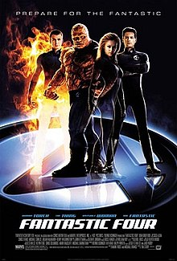

there are four movies:
the first one is "Fantastic fourth"
 link to viewInformation about the movie: fantastic four was produced in USA (18,july,2005);
SHort description: A group of astronauts gain superpowers after a cosmic radiation exposure and must use them to oppose the plans of their enemy, Doctor Victor Von Doom
the second one is "Spiderman:Homecoming"
 link to view
link to viewInformation about the movie: the film was produced in USA (7,july,2017)
SHort description:Spider-Man: Homecoming is a 2017 American superhero film based on the Marvel Comics character Spider-Man, co-produced by Columbia Pictures and Marvel Studios, and distributed by Sony Pictures Releasing. It is the second Spider-Man film reboot and the sixteenth film of the Marvel Cinematic Universe (MCU). The film is directed by Jon Watts, from a screenplay by the writing teams of Jonathan Goldstein and John Francis Daley, Watts and Christopher Ford, and Chris McKenna and Erik Sommers. Tom Holland stars as Spider-Man, alongside Michael Keaton, Jon Favreau, Zendaya, Donald Glover, Tyne Daly, Marisa Tomei and Robert Downey Jr. In Spider-Man: Homecoming, Peter Parker tries to balance high school life with being Spider-Man, while facing the Vulture
the third one is "Undispuited 1"
 link to view
link to viewInformation about the movie: the film was produced in Russia (23,august,2002)
SHort description: When heavyweight champion George "Iceman" Chambers lands in prison, the resident gangster arranges a boxing match with the reigning prison champ
the fourth one is "Mutant chronicles"
 link to view
link to viewInformation about the movie: the film was produced in UK (10,october,2008)
SHort description: 28th century soldier Mitch Hunter leads a fight against an army of underworld Mutants.Mutant Chronicles is a 2008 British-American independent science fiction horror film, loosely based on the role-playing game of the same name. The film was directed by Simon Hunter, and stars Thomas Jane and Ron Perlman. The film was released throughout Europe[3] in 2008. The film premiered on VOD on March 27, 2009, and had a theatrical release for selected cities on April 24, 2009.[4] The film was released on DVD and Blu-ray Disc on August 4, 2009.